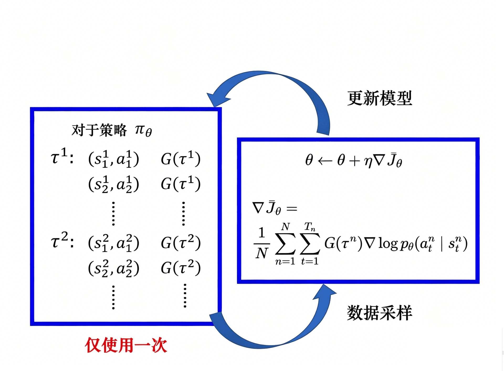

同异策略和重要性采样
同策略和异策略
强化学习中经常会见到的词：同策略（on-policy）和异策略（off-policy）。本质其实就是用来训练/计算的数据是不是在当前这个策略下得出来的。
回顾以前的方法，比如 REINFORCE、Actor-Critic，这些方法都是确定好当前的策略，然后采样数据进行训练/计算，再去更新策略。等策略更新完之后，以前的数据用完就扔，不能拿来反复训。所以这些方法都是同策略的。
再比如最经典的例子，就是时序差分 TD 的两种方法：SARSA 和 Q-Learning，前者是同策略，后者是异策略。
注意事项
一定要注意了：同策略/异策略和在线/离线学习是两码事情！！
在线/离线是指，能否可以使用预先收集好的、固定的静态数据集中学习。
同策略/异策略是指，用来更新智能体策略的数据，是不是由当前智能体自己（目标策略）生成的。
一定要注意的是：异策略和离线学习不是一码事情！！ 后续一定要始终记住这句话。
来看 SASAR，它的迭代公式为:
可以看出，这里的 \(a_{t+1}\) 是完全依照当前策略 \(\pi\) 的。所以 SASAR 是同策略的。换句话说，学的是「整条连贯轨迹」，动作之间强绑定。以前在旧的策略下采集的数据，就没有用了。
再看 Q-learning，它的迭代公式为：
这里的 \(a_{t+1}\) 和当前策略并没有关系，它假设下一步直接走全局最优动作，所以它采集的数据不一定就是按照现有策略，只要这样，那么就是异策略的。
重要性采样
重要性采样存在的原因
回顾 REINFORCE 的公式和它的流程：

很尴尬的一点是：样本只是用一次，只要 \(\theta\) 发生变化，旧的策略 \(\pi_\theta\) 下采集的数据，就不能用了。采集数据可是一个要花费大量时间的工作，所以导致整个算法效率很低。
所以能否找到旧策略 \(\theta\) 下采集的数据和新策略 \(\theta^{'}\) 之间的关系，把数据转换一下，可以用在新策略上？这就是重要性采样想做的事情。
重要性采样正式说明
下面开始正式说明，主要参考以下链接，大部分内容直接摘抄，添加一些自己的看法：
假设我们有一个函数 \(f(x)\)，要计算从分布 \(p\) 采样 \(x\)，再把 \(x\) 代入 \(f\) ，得到 \(f(x)\)。我们该怎么计算 \(f(x)\) 的期望值呢？假设我们不能对分布 \(p\) 做积分，但可以从分布 \(p\) 采样一些数据 \(x^i\)。把 \(x^i\) 代入 \(f(x)\)，取它的平均值，就可以近似 \(f(x)\) 的期望值。
但现在假设我们不能从分布 \(p\) 采样数据，只能从另外一个分布 \(q\) 采样数据。
个人注解：这里的分布就可以理解成策略 \(\pi\)，不同策略有不同分布。
但如果我们从 \(q\) 采样 \(x^i\)，就直接平均，因为我们要求的是 \(x\) 从 \(p\) 采样出来的期望。所以我们做一个修正：
就可得
我们就可以写成对 \(q\) 里面所采样出来的 \(x\) 取期望值。我们从 \(q\) 里面采样 \(x\)，再计算 \(f(x) \frac{p(x)}{q(x)}\)，再取期望值。
其中 \(\frac{p(x)}{q(x)}\) 是重要性权重（importance weight），需要乘一个来修正这两个分布的差异。\(q(x)\) 可以是任何分布，唯一的限制就是 \(q(x)\) 的概率是 0 的时候，\(p(x)\) 的概率不为 0，不然会没有定义。
重要性采样有一些问题。虽然我们可以把 \(p\) 换成任何的 \(q\)。但是在实现上， \(p\) 和 \(q\) 的差距不能太大。差距太大，会导致方差过大。两个随机变量的平均值相同，并不代表它们的方差相同。
方差计算如下，将 \(f(x)\) 和 \(f(x) \frac{p(x)}{q(x)}\) 代入方差的公式 \(\operatorname{Var}[X]=E\left[X^{2}\right]-(E[X])^{2}\)，可得
差别在于第一项， 多乘了\(\frac{p(x)}{q(x)}\)，如果 \(\frac{p(x)}{q(x)}\) 差距很大，\(f(x)\frac{p(x)}{q(x)}\) 的方差就会很大。所以理论上它们的期望值一样，但是如果我们采样的次数不够多，因为它们的方差差距是很大的，所以我们还是有可能得到差别非常大的结果。
重要性采样的使用
现在要做的就是把重要性采样用在异策略的情况中，把同策略训练的算法改成异策略训练的算法。
怎么改呢？如下所示，我们有新策略 \(\pi_{\theta}\) 与环境交互，采样出轨迹 \(\tau\)，计算 \(G(\tau) \nabla \log p_{\theta}(\tau)\)。现在我们有旧策略 \(\pi_{\theta'}\)，采样的数据，之前不能用，现在可以进行如下调整：
这里的公式中 \(p_\theta(\tau)\) 和 \(p_{\theta'}(\tau)\) 分别表示轨迹 \(\tau\) 用策略 \(\pi_\theta\) 和 \(\pi_{\theta'}\) 采样出来的概率。这个可以用直接采样的数据去算占比，所以是可以算出来的。
实际在做策略梯度的时候，我们并不是给整个轨迹 \(\tau\) 一样的分数，而是将每一个状态-动作对分开计算。实际更新梯度的过程可写为（现在换成 Advantage Actor-Critic 的形式）：
同理，可以使用：
拆解 \(p_{\theta}\left(s_{t}, a_{t}\right)\) 和 \(p_{\theta'}\left(s_{t}, a_{t}\right)\)，即
于是我们可得
这里需要做的一件事情是，假设模型是 \(\theta\) 的时候，我们看到 \(s_t\) 的概率，与模型是 \(\theta'\) 的时候，我们看到 \(s_t\) 的概率是一样的，即 \(p_{\theta}(s_t)=p_{\theta'}(s_t)\)。因为\(p_{\theta}(s_t)\)和\(p_{\theta'}(s_t)\)是一样的，所以我们可得
\(p_{\theta}(a_t|s_t)\) 很好算，我们有参数 \(\theta\) ，它就是一个策略网络。我们输入状态 \(s_t\) 到策略网络中，它会输出每一个 \(a_t\) 的概率。所以我们只要知道\(\theta\) 和 \(\theta'\) 的参数就可以计算 \(\frac{p_{\theta}\left(a_{t} | s_{t}\right)}{p_{\theta^{\prime}}\left(a_{t} | s_{t}\right)}\)。因此就可以用旧策略了。
另外，从梯度计算反推回原函数，得出如下公式，这个在下一章节会用到：
为什么我们可以假设 \(p_{\theta}(s_t)\) 和 \(p_{\theta'}(s_t)\) 是一样的？
因为状态往往与采取的动作是没有太大的关系的。比如我们玩不同的雅达利游戏，其实看到的游戏画面都是差不多的，所以也许不同的 \(\theta\) 对 \(s_t\) 是没有影响的。但更直接的理由就是 \(p_{\theta}(s_t)\) 很难算，\(p_{\theta}(s_t)\)有一个参数 \(\theta\)，它表示的是我们用 \(\theta\) 去与环境交互，计算 \(s_t\) 出现的概率，而这个概率很难算。尤其是如果输入的是图片，同样的 \(s_t\) 可能根本就不会出现第二次。我们根本没有办法估计\(p_{\theta}(s_t)\)，所以干脆就无视这个问题。
个人注解，意会即可，不理解也就算了，没必要在这上面花费时间。